| 変態は承服しかねる | |
| あんぷらぐど | |
| aranawakoubou (2015) | |
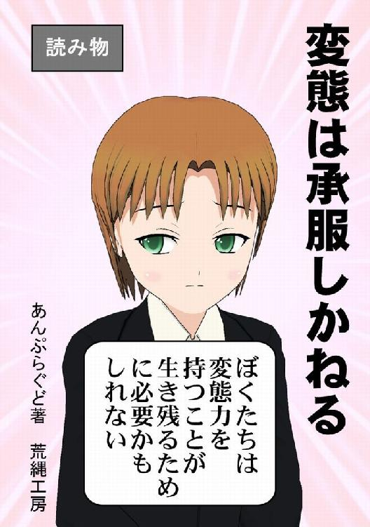
変態は承服しかねる
あんぷらぐど著 荒縄工房・発行
ご注意！
本書では著者はまじめに考察しています。
変態性性欲や犯罪行為を推奨しているわけではありません。犯罪行為としての変態行為は法律やモラルに反する行為であり、常識をわきまえた人間であるなら、やってはならないことです。
被害者の気持ちもわからないような人間になってはいけないのです。
同時に変態だからというだけで、不当な差別をするのもよくないとも思っています。たとえ変態だとしても人権は守られるべきです。
また、著者は自分では「まともなことを言っている」と思っていますが、世の中的にはそうでもないことを失念しているときがあり、常軌を逸した論を駆使し、ロジカルシンキングを無視していることもあり、きわめて読解しにくい、理解に苦しむ表現があります。これは誰のせいでもなく、すべて著者のせいです。
とはいえそれなりに表現に気をつけてはいます。特定の人や団体を誹謗中傷するつもりはありませんし、傷つける意図もありません。もし、そう感じられる場合は本書を読むことをただちに中止して、忘れていただければと思います。
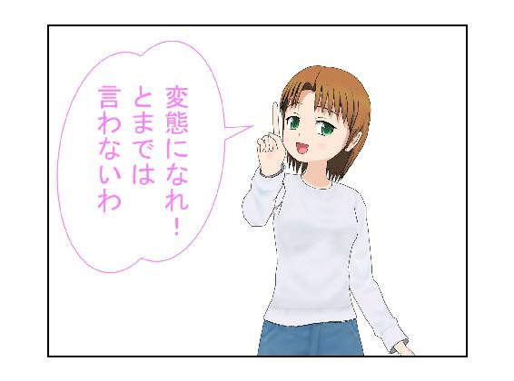
なにをバカなことを言っているのか。
それが本書の主なテーマである。まったくもって恥知らず。タブーなき性愛の追求？ 支配する愛、支配される愛？
たしかにそれはロマンでありファンタジーだ。
しかもこの著者はそういうタイプの作品（お下劣なので読まない方がいい）ばかり書いている。生きている限り、これからも書くらしい。迷惑千万である。
このような、サブカル的な存在のようでいて、むしろアングラというか、底辺というか、石をひっくり返したらそこでコソコソしているような輩は、理屈をこねるのが好きである。理屈でもこねないと、陽の当たらないところに棲息する意味が見いだせないからだ。
かつて、ウディ・アレンが東海岸から西海岸に行く男の映画を撮ったが、あれだけ理屈っぽかった主人公（アレン自身が演じている）も、西海岸の強い陽光の下では理屈が通じないことに気づく。
明るいところでは理屈はあまりいらないのだ（東海岸が暗いというわけではないけど、西海岸ほど明るいわけではない）。
陽に当たると死ぬから、暗くてじめじめしたところにいる。もはやそれが理屈である。
というわけで、変態は理屈が好きなのだ。ただし理屈好きが必ずしも変態ではない。以下、逆は成立しない話が多いので注意深く読み進めていただきたい。
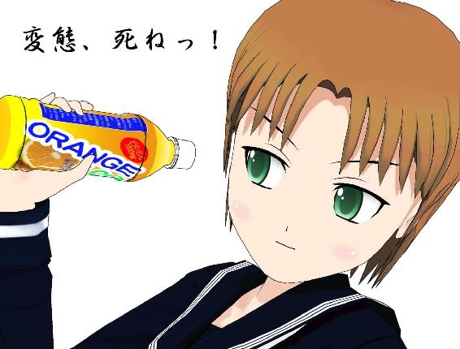
もっとも理屈なんてものは、ほとんどが生きていく上では不要なもので、石の裏側でぶつぶつ言ってるやつには、一言で片付けることもできる。
「死ね！」
ふさわしい言葉である。
でも死なない。逝きたいというよりも生きたい。そんな意識すらなく、死にたくない。死なないようにするので、結果的に生きているのである。
しょうがないじゃないか、生きてるんだもの。
この本は、その意味で「屁理屈」の本である。著者は基本的にエロ小説ばかり書いているのだが、本書には一切、エロはない。十八禁ではない。十八歳未満で読むことを推奨はしないが、読めるものなら読んでみろ的な、著者のはじめての一般書である。日陰者が日向にこそっと手をのばしたのである。卑しく、さもしい行為である。
しかもテーマは「変態」だ。
これを陽の当たるところに出せば、「いい意味でのヘンタイ」という表現になるだろう。著者はもちろん、そんな意味で語っているわけではない。
本書での〝変態〟は、文字通りの変態であり、いい意味でも悪い意味でも〝変態〟としか表現しようのない存在のことだ。
その上で、変態の存在意義、変態であることのメリットを、屁理屈で展開しようというのだ。
実は変態をどれだけ擁護したところで、それほどの意味はないのである。意味のないことを、こうして公然とやってみることが、そもそも変態ではないか。
その点では著者の変態性の一面を垣間見ることはできるだろう。
ああ、そうなのだ。そんなものを垣間見ても、なんの得にもならないのである。
この全体としてのメリットの薄さ、むしろダメージの多さ、これを業界では「痛い」と表現するのだが、まさにこれは「痛い書」、「痛書」である。イタメシの類語である（ウソ）。
そもそも自虐的快楽の作品も多い著者なので、もしかすると、このような「痛書」を捏造する行為が、快楽になっているのかもしれない。そう思うと、読者はさらに気持ちが悪く、読むことで、著者の変態欲求を満たす行為に荷担することになりはしないかと、正直、いやになる。
変態は伝染しないと思うので、最後まで読んでもたぶん、大丈夫なはずだとは思うが、保証はできかねる。
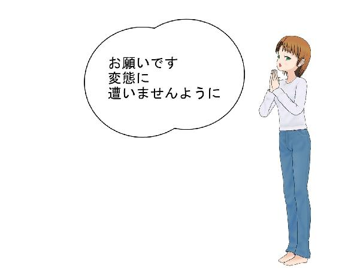
嫌われてもいい、好きなことができさえすれば――。
日陰でコソコソしているヤツらしい発想だ。著者はそんな発想が大好きである。本書はそんな発想から誕生した。
ちなみに本書は、おそらく世界でもっとも「変態」という言葉を多用している点で、記録的である。ギネスに載せてもらいたいほどだ。
なお、ブログに書いた原稿を、大幅に修正している。いまさら修正したところで、よくなるわけもないのに。いやむしろ痛みが増すだけなのに。傷口にハバネロをこすりつけるようなものなのに。修正というよりは醜悪なのに。修悪と変換すべきか。すべきではないか、迷うところだ。というようなことを書き込むのも変態ならではだろう。
さらに、これだけではボリュームが薄いと気づいたのだが、「薄くてもいい」と変態的な決断のもと、中身と文字量ともに薄いままで出すことにした。薄いからといって無精子とは限らないのである。
おまけに「コミＰＯ！」に申し訳ないことに、そのキャラを変態的に挿入して「かさ増し」するのである。このマンガがまったく意味を持たないのは言うまでもない。宝の持ち腐れ。贔屓の引き倒し。屋上屋を架す。
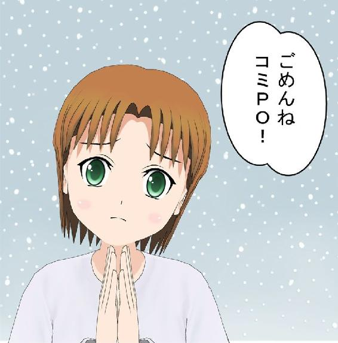
そうそう、ここで気づかれたと思うが、当初は客観的な文章のようだったこの「はじめに」（えっ、まだ「はじめに」なの？）は、もちろん主観的に書いているのであって、自虐的変態の著者、つまり著者が自分なりにこの本の利点を列挙し、どれだけ苦労して書いたかを表現すべきところを、存在のすべてを否定する立場から書いてしまっているのである。
結論から言えば、あらゆる変態は否定されるべき存在である。それなのに、変態は死なない。
ところで、否定から生まれるものなど、あるのだろうか。
それは著者自身もわからない。
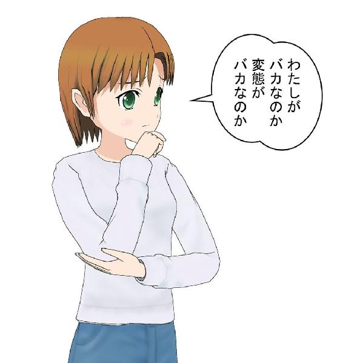
かなり昔、『ヘンタイよいこ新聞』というのがあった。詳細はウィキペディアに書いてある。
最近、ある高名なコンサルタント（女性）が、「ホントに私たちってヘンタイですよねー」と話していて、ツイッターでもその通りのことを書いていた。すると彼女を知るコンサルタントやクライアントたちが「我々はみんなヘンタイだから」と返していた。
ヘンタイと変態はたぶん、違う。
だが、変態の認知度は高まっている。世間に認められてしまうかもしれない。同性愛や女装といった話と変態は違うというのに......。
時代が変わりつつある。このままではこの波に、変態クズ野郎が飲み込まれてしまう。石がひっくり返されたとき、その下でしか生きられない者たちは干からびて死ぬ。その前にあがいてみなければならない。
著者は焦った。
「変態が変態じゃなくなる！ そんなこと、許されていいのか。たしかに日本語に限らず、昔の悪い言葉が、いい意味に転換するケースは多いけど、〝変態〟までいい意味になっていいのか」
変態という存在を、著者ほど愛してる者はいない。変態になってしまうか、変態を拒絶するかという二者択一ではなく、著者は変態の存在を最大限に認めるという偽善的な発想を持ち、そして石をひっくり返してみるのである。もちろん、生態系を乱さないように、すぐに石は戻してあげるし、土足でそこに踏み込むようなことはしない。
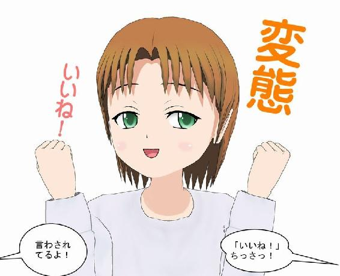
変態ということがわかったときに「いいね！」する。その思いが、本書である。「変態は承服しかねる」のである。ストレートな世界には常に懐疑的で屈折しているからこその変態なのだ。承服しかねる、というクソみたいな言い回しをあえてするのも、変態ならではの屈折ぐねぐね表現である。
お天道様の下、表通りを歩いてどうするんだ。マジでガチでヤバイ。それもいい意味のヤバイではなく、元祖のヤバイ意味でのヤバイである。
そして、先の例。ビジネスパーソンが口にするカタカナの「ヘンタイ」は、著者が思っている変態とは違うようだと思い至る。
なにしろ「ヘンタイ」はさんさんと降り注ぐ紫外線の下でも平気でいられる。そのヘンタイ性には裏表がなく、表から堂々と「私はヘンタイ」と看板を掲げている。
一方で、変態は裏側でコソコソしたい。紫外線はゴメンである。月光でも充分だ。真っ暗でもいい。その存在を知られないままで多くの人たちが、平穏無事に人生をまっとうしていただいてかまわない。
自分で自分のことを変態だと言うのはかまわないが、見知らぬ人から「おまえは変態だ」と言われたらケンカになる確率が高い。
それがこれからは、知的さを売りにしている人たちの間では「そうなんだよ、オレ、変態なんだよなあ」「あなたもなの？」と明るく会話するのだろうか。
それは、変態として避けたいことではないか。
変態の権利を主張する気はサラサラない。国会で変態の法制化を論じる気もない。そういう表舞台から見ると、存在しないことになっていることに、むしろ清々しいまでの快感を得るのが変態の真骨頂かもしれない。
だが、こんなものを書いているのだから、著者自身はヘンタイと変態のハイブリッドなのかもしれない。どっちにしろ変態だけど。
変態小説歴の長い者としては、いまさら「オレは変態じゃない」とは言いにくい。しかし「あんぷらぐどさんって変態ですよねー」と言われるよりは、「あんぷらぐどさんて、案外、フツーですよねー」と言われる方がホッとする自分もいる。
それがこれからは、「いやあ、変態なもんですから、大目に見てくださいよー。二つで充分ですよ」とでも言うのだろうか。
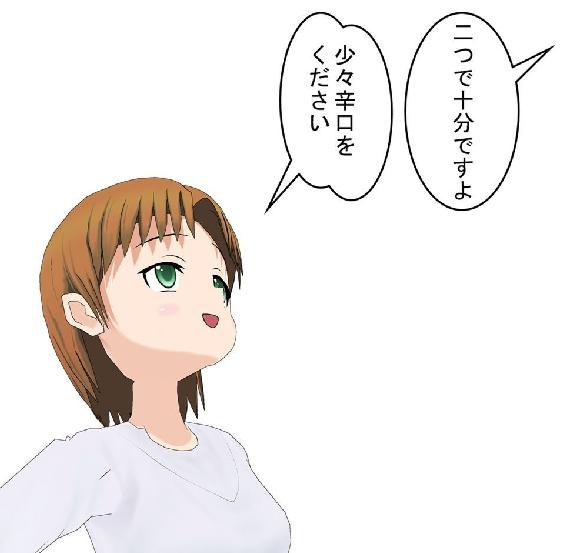
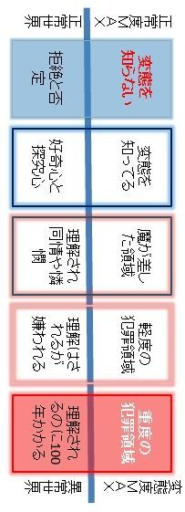
著者のごとき大甘な変態は、変態レベルでいえば下の下であり、大した変態ではない。どちらかといえばフツーである、というのは妙に安心する評価なのだ。
先の図で言えば、「変態を知ってる」ところに過ぎない。この図の左側は正常であり、右へ行くほど変態になっていく。
具体的には「魔が差した領域」からすでに変態である。このため多くの人が「変態！」と罵られることになる。それでも、ちゃんと話をすれば、理解や同情や憐憫を得られることもある。
それよりずっと手前の「変態を知ってる」ぐらいの状態。ここをワンブロックで表記しているのだが、この中はさらに細分化されるだろう。それは、「好奇心と探究心」の度合いに比例する。
本書を読んだぐらいでは、ほとんど変態ではない。知的好奇心をくすぐられた程度で、大したことではない。そこから他書を読み始めたり、著者のヤバイ小説類を読み込むようになると、かなり右側へズレていくことになる。
さらに探究心が覗き趣味的になり、変態を直接観察しようとなれば、変態度はかなりアップする。
それでもこの範疇に留まる限り、あなたは正常世界の住人である。
注意したいのは、このブロックに踏みとどまることができず「魔が差す」ことである。
それは変態的な出し物を中心としたフェスに参加するぐらいなら問題はないのだが、なぜかフェスの出店者側に参加するといった行為である。
客席にいれば正常世界。舞台に上がれば異常世界。これは人類にとって大きな飛躍である。
当然ながら〝変態〟というだけでは舞台には上がれない。むしろ引きずりおろされる。
正常世界を突き抜けての〝変態〟でなければ、見せる側として受け入れられることはない。これは、盗賊が〝大盗賊〟となれば、小説や芝居の題材にもなることに似ていて、いわば〝大変態〟になる必要がある。しかし、本書ではあらゆる変態を〝変態〟として表現することを基本としているのと、大小で区別することは本質を見誤る恐れもあるため、〝大変態〟という言葉は基本的には使用しない方向だ。
ここで言えることは、〝変態〟であっても、ある意味で優れた正常世界の住人（私が嫌いな言葉を使えば「常識人」）であることが、より活動の場を拡げることになるし、受け入れてくれる場が増えるだろう、ということ。
魔が差しただけの変態なら、目が覚めたところで正常世界へ戻ることも可能だ。この境界線上に踏みとどまっている、つまり「たまにバカやっちゃうんだよね」という段階なら、まだ変態度は低い。
この先は、危ない。「軽度の犯罪領域」とは、条例違反などを含めた世界である。罰金刑、起訴猶予なども含まれる。
本格的変態にとって、もし生きながらえたいのなら、優秀な弁護士を雇うだけの財力を持つか、あるいは法律に精通するぐらいの頭脳を持つべきだろう。
もっとも、「魔が差す」からさらに行動力を発揮するときに、ある程度の理論武装をするはずなので、そうした頭脳を持っているか、持っている人と組むかするはずである。もしそれなしで変態領域に踏み込むことは、高所訓練を経ずにチョモランマに行くようなものであり、耳抜きもできないのにスキューバダイビングのライセンスを取ろうとするようなものである。
もっともこうしたステップを踏まないのも、真の変態の特徴でもある。現在、変態領域にいる人物が、こうしたステップを踏んでいないからといって、誰でもが真似できることではない。運がとてつもなくいい変態かもしれないし、巨万の富を持った変態かもしれないし、絶大な権力を持った変態かもしれないし、友人に恵まれた変態かもしれないのだ。
不用意に近づいても、痛い目に遭うだけだ。
そして痛い目に遭いたい変態も多いため、わざわざ燃えさかる炎の中へ裸で飛び込むような人も皆無ではない。
こうした変態は、無謀すぎてたいがい短命である。
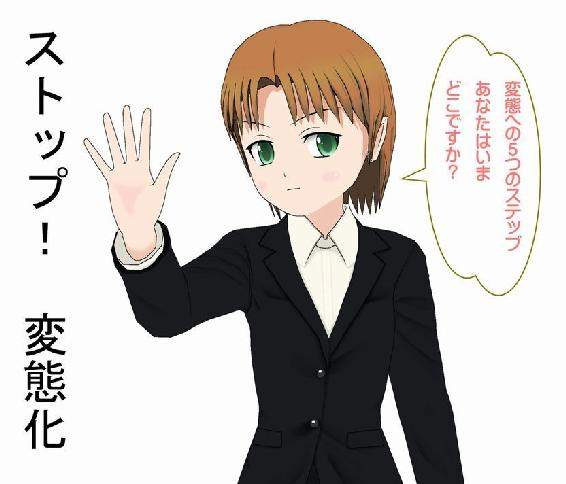
著者はまだまだあまちゃんである。ヘンタイからも変態からもバカにされる可能性が高い。こんな自分のことを語っても意味がなさそうだが、変態について考える手掛かりとして、自分自身の変態度について洗いざらい、述べておく必要もあるかもしれない。
ズルい女のようだが、石の縁にいて、周囲が静かなときには日向に出て、なにかあったらさっと陰に入りバイバイするような、その程度の中途半端な変態。それが著者である。まさにフツーだ。
もっともこうしてこれを書いている自分としては、「まだまだオレの本質的な変態部分は誰も知らぬのだ」という虎視眈々な気持ちもある。
「羊の皮をかぶった狼」という表現は陳腐だけど、子どもの頃からの憧れだった。
しかし、子どもながらに「狼が先か羊が先か」と考え、一生懸命に羊の皮をつくりはじめていた。まず羊だろう、と考えてしまうぐらいフツーの思考の持ち主だった。
羊になろうとするあまり、狼になるのを忘れてしまっているのではないか。
いまさら狼はムリだ。だったらどうするか。
フリをすればいいのではないか？
結果、羊なのに狼のフリをするような捻れた人間になっていた。狼要素が少なすぎ、ということだ。もっとも、人間は狼要素を剥き出しにすると刑務所に行ったり海に沈められたりしかねない。このあたりは『アウトレイジ』と『アウトレイジ ビヨンド』を参照してほしい。間違っても、『エクスペンダブルズ』や『エクスペンダブルズ２』や『エクスペンダブルズ３』、『エクスペンダブルズ４』『エクスペンダブルズ５』などを参照しないように。
だから、著者のような人間（がいるとすれば）多かれ少なかれ、自分の中の狼を飼い慣らしているはずだ。もし自分の中に狼がいない場合は、いるようなフリをするのだ。
そしてあるときから、この羊の皮は、変態小説を書きはじめた。
その理屈は簡単で、「狼要素が足りないので、表現として狼要素を増加してみよう」ということだったのかもしれない。「ペンネームでの表現者は、狼の皮を被ることができる」という発見をしたのだった。
なお、著者は「変態小説ではない。性愛をテーマとしたエンターテインメント小説であり、性愛には正常も異常もない」を持論としている。
「つまりあんぷらぐどの作品に変態は存在しない。読者が求める性愛こそが、いい性愛なのであり、タブーなき性愛をテーマとしている」という。この件についての抗議はあんぷらぐどへどうぞ。
そして創作の思考によって、脳内で狼を飼うことが可能になった。羊の皮を被った狼のフリを、少なくとも表現の上ではできるようになったのだ。
芸は身を助けるのであろう。
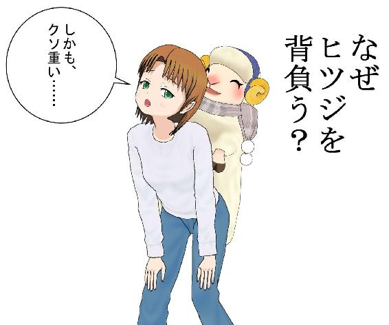
もしかして、地球が動いてんじゃね？と思ったように、変われない自分を隠す新たな石というか皮というか、もはや喩えが面倒になってきたが、とにかくそういうものを新たにトッピングしてみる。こうして「変態な私」が出来上がる。
トッピングは強力である。
とくに、玉子、チーズ、マヨネーズは強力で、もはやその下のものがなんであるかを忘れさせてしまうほどのトッピング力を持つ。
ペンネームは、玉子やチーズ、マヨネーズに匹敵する。
自分は狼ではない。狼要素は「フリ」だけ。羊の皮をかぶってヌクヌクしている。そうして、それほど多くもない狼要素をかき集めて変態性剥き出しにして、全開でバリバリに作品を書いてしまうのだ。
変態性は、大きさではない。小さい××××でも、それを出して街中を歩けば立派な変態だ。
大きさや強さだけが問題ではないとすれば、こうした変態にとって、いったいなにが重要なのだろう。
変態も一夜にしてならず。変態も人の子。そういうことに気づくことで、私たちは、そもそも変態は人であることを思い出さなければならない。
羊として生まれた人は、どうやったって羊である。つまり、重要なのは狼部分よりも羊部分ということになってくる。
羊の皮を被った狼であるなら、当然本質は狼なのだが、著者の変態性は、狼は脳内でバーチャルに飼育しているだけで、羊の皮を被った羊である。
つまり素の人間性が、結局、変態のステップを歩まないように踏みとどまり、犯罪に走らないで、フツーの人間として生存せしめているのである。
気がつけば何十年も生きてしまったけども、羊の皮もだいぶくたびれてきている。つぎはぎだらけだ。そして、相変わらず狼は育っていない。永遠の子どもである。
羊の皮を被った狼どころか、狼のフリをした羊の皮被りなのだからしょうがない。自分でもなにを言っているのかわからなくなってきたぞ。
そんなわけで、人から「おまえは変態だね」と言われるのは困る。断じて変態ではないのである。
ステップを踏み出してもいない。
まだ始まっちゃいないのである。
いまさら狼にもなれず、狼の皮を被った羊としても存在感は薄い。四面楚歌。
大変態にはなれなかった。少々変態であるにすぎず、それはまるで秋葉原の「ラ・ホール」でついつい「少々辛口」を頼んでしまうのと同様、はっきり言ってまるで辛くない。だけど、せっかくこの店に来てフツーはいやだ。辛いのもいやだ。甘口もいやだ。そんな感じ。
「少々変態ください」というわけだ。
本書は変態について書いた本になるはずだ（まだ「はじめに」が終わっていない！）。
それは著者自身が変態ではないことを証明することでもある。もはや、狼を育てるには遅すぎる。だったら羊でいく。羊の皮として死ぬ。死して虎は皮を残す。あんぷらぐどは、薄皮ぐらいしか残らないかもしれないが......。
この本は皮のことを書くのが目的ではない。
変態を書くことで、自分の変態ではない姿を明白にすると同時に、変態への憧憬、変態のすばらしさを考えたいのである。
中にどっぷり漬かっている人たちよりも、ふらりと訪れたアウトサイダーによって、その世界の本質が発見されることがしばしばある。コロンブスが発見するまで、そこはアメリカではなかったのだ。住んでいる人たちは自分たちが先住民だとは思わなかった。
著者はいま、新大陸を発見した。変態という大陸である。変態陸である。情熱変態陸である。広大な母なる大地。マザーネイチャー的変態世界である。
そして、発見するのだ。
変態は自由だ、ということを。
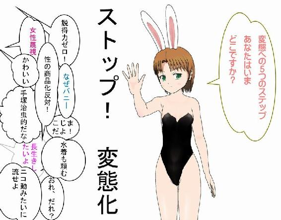
いったん、落ち着こう（やっと「はじめに」は終わっていて、本文になっている）。
変態は自由だ、ということを考えてみたい。
変態とはなにか。辞書を引くまでもなく、ネットで調べるまでもなく、いくつかの定義の中で、ここでは「正常ではないこと」という意味で定義しよう。簡単に言えば「異常」なことだ。ただし、異常世界がすべて変態とは言えないので、逆は真ならず。
本書では仮に、異常は変態を内包した世界としておくので、以後、正常世界に対するのは異常世界となる。
著者は変態だ。または変態でありたい。著者は正常ではない。いや正常でもありたい。そもそも、正常とはなにか。誰が決めるのか。最大公約なのか。平均値なのか。
いろんな疑問が飛び交うことだろう。または最初からそんな疑問は浮かびもしないだろう。一応、疑問に思ってくれた方が先に進みやすい......。
変態は、ともかく「逸脱」感がある。
正常から異常へ。
逸脱とは、みんなで仲良く暮らすためにつくられた常識的な範囲を壊すことで、群れから飛びだそうとする試みだ。
もしくは、自分たちがいまいる位置を確かめるために、外から眺めようとする試みだ。
逸脱するためには、いまいる位置から離れなければならない。それは、三十分並んだパンケーキ屋の行列を撮影するためには、列を離れなければいけないのと同じである。鉄道ファンの中でも「撮り鉄」は、鉄道に乗ってしまうと撮れないのでクルマや徒歩で移動しているのである。
店の行列は、不用意に離れると自分の居場所がなくなる可能性がある。撮り鉄はぜんぜん鉄道に乗らないまま一生を終えてもおかしくはない。
逸脱とは、本書で段落ごとに起きている混乱である。それではわかりにくいから......。
「そっちに行っちゃいけないって、先生（とか親）が言ったよ」
でも行く。それが逸脱である。
なにかしら変態的な快楽に突き動かされたり、熱狂的な興奮に取り憑かれたりして、正常世界と異常世界の境界線を乗り越えてしまう。
多くの場合、危険な目に遭い、命を落とすこともある。
衝撃映像、決定的瞬間特集でよく見ることができる。いい写真を撮りたくて後ろに下がったら、プールに落ちる、崖から落ちるといったお約束の光景のように。
「だから言ったのに」的な結末となり、「バカ」となじられることもある。このバカなことを頻繁に繰り返すと変態性が強くなってくる。異常と言うだけでは足りない。もちろん、崖から落ちれば命を落とす可能性だってあるのだから笑い事ではない。
それでもあえて踏み外す。乗り越える。落ちる。登る。はまる。沈む。飛ぶ。
「おれ、変態だから」
そうとでも言うしかなくなる。
この変態としての活動がない限り、常識とされる範囲から逃れることはできず、常識の領土は、拡大できない。
なにしろ自分たちでは、自分たちの立ち位置がよくわからないのだから。位置のわからない連中がどれだけ議論しても、先には進めないのである。
地球は青かった。だから地球を守ろう、自然環境を破壊していはいけない、おまえら人類のためになにやっちゃってくれてんだよー、戦争してる場合じゃないよ、テロとかしてるんじゃないよ、地球が危ないんだぞ、ストップ温暖化だぞ、という話になる。
現代の常識は過去の変態たちによって、拡大されてきたのだ。正常なだけでは人間は生存できないのである。異常を取り込む力。それが変態パワーだ。
「変態さん、ありがとう」なんて、誰も言わないけど。
もっとも、変態に礼はいらない。
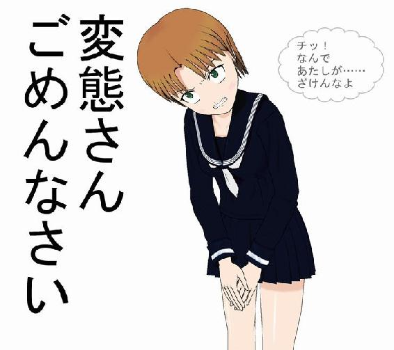
この、体毛が他の陸上にいる哺乳類の中でもっとも薄く、走る速度もせいぜい時速30キロ程度という、虚弱体質といってもいい肉体の人類なのに、もっとも成功し繁栄した哺乳類となれたのは、正常さだけでは飽き足らない貪欲さ、異常さ、つまり変態性があったからだと著者は確信している。変態バンザイ！
正常世界という小さな狭い村は、変態によって異常世界を崩して拡張し大都会に発展する。
昨日の異常世界は、今日の正常世界である。
この本にはエロはないが、たとえば「セックス」という言葉を何度叫んでも、著者は正常世界から外に出ることができない。
セックスアピール、セックスシンボル、セックスレスといったことをこれから考察しようとしたら、退屈な日常的でＮＨＫ的な世界にどっぷりとはまりこんでしまうだろう。
いまを語るときに「セックス」を抜きには語れない。ＣＭの大半はセクシーである。なぜアイスクリームを食べるのに肩まわりを剥き出しにしたドレスを着なければならないのか。
なぜアイドルは下半身がひらひらした服装をするのか。そして足を出すのか。
女性だけではない。ＣＭで男が見せる目つきは、見ている者を「いてこます」目でなければならない。魅力とはそういうものである。
人が出て来ないＣＭでも同様である。必要以上に商品をアップで撮る。舐めるように撮る。陰影濃く撮る。広大な大自然の中にポツンと放り出す。過酷な条件下に放置する。すべてセクシーな行為である。
さらに商品名の中にはそもそもがセクシーでしかないものも多い。子どもが好むお菓子にもある。ここで例はあげないが、コンビニで探せばエロいネーミングの一つや二つはすぐ見つかるだろう。
つまりセックスは「いま」なのである。ただし、淫靡、淫らなところまでいくと、さすがに「逸脱したかも」となっていく。
その線引きは女性用下着の宣伝によく見られる。そもそもセクシーさを売りにした下着はもろにセクシーであるが、日常的な機能を売りにしているものは、どうすれば淫らにならずに表現できるかと、面倒な努力をしている。
薄暗いところで美しいモデルが下着になると淫らになっていくが、明るい試着室のような環境下ならそうでもない。スポーティーな美女がブラをつける仕草は健康的だが、Ｆカップの美女となると淫靡になっていく。
だからといって貧乳にブラをさせるわけにもいかないので、きっと現場では大変な苦労をしていることであろう。
これは私のような変態物書きが、健全なエロ小説を書こうとするかのような困難に通じる。
変態でよく知られる言葉に、サド、マゾがある。サディスト、マゾヒストの略である。どちらも人名由来である。詳しくはここでは述べない。本書は健全な本だから......。
では、サド、マゾは異常世界か。
実は違う。正常世界である。喩えれば、辛さ十倍カレーまでは正常世界だとして、辛さ五十倍カレーが売られている事実とも重なる。
滅多に五十倍を食べる人はいないが、正常世界のメニューになっていて、それが存在してることを多くの正常な人たちが知っている。
ドＳ、ドＭといった表現は、もはや陳腐ですらある。
「ぜんぜん辛くなかったー」みたいなものである。
Ｔシャツにプリントまでされて店頭販売されてしまったフレーズは、いまや苦笑しか出ない。
さらに「ドＳキャラ」といったように「キャラ」をつけると、かぶり物のようなもので、今日はそういう役割なんだね、ということになってしまう。
脱いだり着たりできるお手軽な変身グッズである。
もちろん、異常世界のＳとかＭはそうではない。簡単に脱いだり着たり、変身したり、やめたりできないのだ。異常世界のことはここでは詳細は触れない。
あくまで本書は健全な視点で描かれた変態本だからである。
ザ・ドリフターズの加藤茶は「うんこちんちん」と土曜日の夜、ゴールデンタイムに叫びまくっていた。「ちょっとだけよ」と和風のストリップをパロディにしていた。その変態性に子どもたちは熱狂したのだが、過去の野蛮な時代の話であって、現代でそれをやれば番組は即打ち切りであり、プロデューサーは打ち首獄門であり、タレントは市中引き回しである。
それでいて、変態性欲的な世界の扉はあちらこちらに開いていて、その多くは未成年者でもアクセスできる正常世界にある。このあたりの事情は腐女子が詳しいだろう。お近くの腐女子に聞いてほしい。
そう、腐女子は正常世界に住みながら異常世界に詳しいという特徴がある。彼女たちは前提として、「自分たちは絶対になれないもの」を研究している。そして向こう側へ行って「なっちゃった」というのはマズイのである。そもそもないのである。
こうしたいわばエバンジェリストというか通訳というか顕微鏡や天体望遠鏡で観察する立場の楽しみは、きわめて正常世界である。
どれだけミジンコ愛があっても、それはかなわぬ恋である。そもそもミジンコは基本的にメスしかいない。この詳しい話もここでは述べない。
世の中は正常世界にいる変態たちの無謀な冒険、偏執的愛情によって、異常世界を少しずつ取り込み、正常化しているのである。
いまやＴシャツに文字が並び、バラエティ番組でも用いられ、女優が「私はどちらかといえばドＳです」みたいな発言をしても、「ふーん」で終わってしまう。軽い意味でしか使われないし、これを真の意味で解釈してはいけないことになっている。
かつて異常だった世界。正常世界の外にあって「行っちゃいけないよ」と言われていた領域は、村から町に拡大するときに、あっという間に「まあ、昔はダメって言ってたけど、そうでもないよね」的世界になってしまうのである。
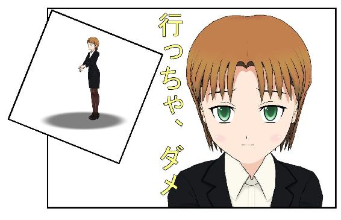
とはいえ、伐採されていく森林であるとか、砂漠化していく大自然といったもののように、正常世界は異常世界の取り込みを無制限に許しているわけでもなく、傍観しているわけでもない。
法律や条令、倫理規範によって異常世界の乱開発を防止しているのである。法律は国によって制定されるもの、条例は自治体によって制定されるもの。倫理規範の定義は難しいが、世の中の雰囲気というか多数決というか、そういうもので形成されている。
そして法律、条例、倫理規範を守ることが正常世界で生きるための「社会性」である。
人間は社会的な生き物なので、社会性を本来備えているだけではなく教育によって醸成されている。
変態とはいえ正常世界に生きるからには、この社会性を最低限、持たなければならない。「ねばならない」と記したように、これは必須である。
ところが異常世界では社会性なんてクソくらえ、である。このため異常世界のエバンジェリストである変態の中には、自らも社会性を失う者も出てくる。
当然、社会性を逸脱した変態たちの逮捕や起訴が後を絶たない。下着を盗み、盗撮カメラを設置し、エスカレーターでスカートの中を撮影し......。この間違いない異常さが午後六時のお茶の間に美しい女子アナの読み上げるニュースとして流れ込むのだ。
一般に、この部分だけを「変態」と狭義の意味で考える人も多い。
社会性を失った変態のことである。変態すべてではない。
こういう狭義の変態はしかし、正常世界では頻繁に報道されている。
「逮捕された男は、上履きの臭いに興奮し、やめられなかったと供述......」とか、「スカートの中に興味があった。撮影した動画をネットにあげることが快感だった」「ストレスがあり、ついむしゃくしゃしてやった」などといった変態語録を、麗しき女子アナが読み上げるのである。
「うんこちんちん」はダメだが、この女子アナに変態犯罪を読ませる変態プレイは合法なのだ。いや、正常なのである。
私たちは、こうして正常世界に暮らしながら、「行ってはいけない場所」を眺めている。眺めているだけではなく、間違いなくそこに「行ってはいけない場所」があることを日々、知らされている。
そしてある日、「そこに行ったらどうなるかな」という気持ちになり、危ない一歩を踏み出す者が現れる。無事に生還した人が「そんなに危なくなかった」と報告する。それによって、さらに多くの人が......。
あっという間に、それが法律に触れないことである限り、無数の人たちによって蹂躙されてしまい、「行ってはいけない場所」ではなくなってしまう。
そのとき社会性までも、わずかに拡張されていくのである。
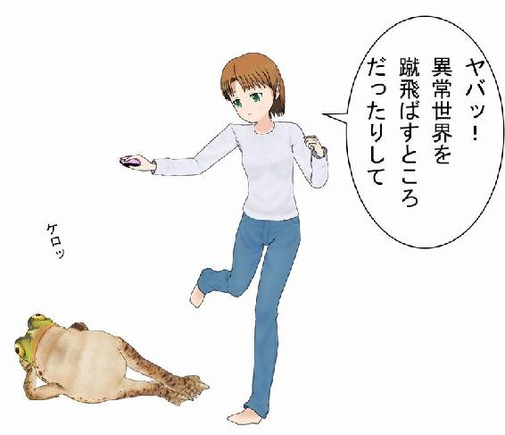
村社会という言葉がある。村は「そこに所属している限り生存権を与えられる共同体」といった面がある。そのため村八分になると生きにくくなるように、設計されている。また村の範囲が限定されているので、境界を越えても村との関わりはなくなってしまう。
法治国家の日本でも、他の法律に違反しない限り、そして公序良俗に反しない限り、村単位の決まり事は自由に決めてもいいことになっている。祭りをどうやるか、いつやるかは、村で決めていい。その決め方も村で決めていいのである。外部の者がとやかく言うことではない。
正常世界も一つの村だとすれば、同じような状況にある。正常世界のことは正常世界で決める。
範囲の中にいる者にとっては、範囲の中で許されているものだけがすべてである。パーフェクトなのだから、なにも変える必要はない。むしろ正常な範囲の中に、さらに純粋に正常な範囲をつくろうとするだろう。小さく小さく、縮こまる世界である。
原理主義というものも、本来はムダな要素を削ぎ落とし、純粋な小さな規範を忠実に守る社会だったのではないか。その勢いが余って、その規範を強要したり、反対する者を殲滅するといった過激な方向へ進んでしまったのではないか。
正常世界からでも、このようにアブノーマルな方向は伸びてる。おもしろいことに、この正常世界の純化による異常世界の出現に対抗するためには、正常世界の外にある異常世界を取り込んでいくしかない、といった事態も起こり得る。
自分で凝りに凝った大好きな部屋をつくったとたん、そこに居たくない、という気分になる。よくあることである。純化してしまった正常世界は、自分をも排除するのだ。
その結果、異常世界へ逃れるしかなくなるのだ。
アブノーマルという概念から常識に則って身を守るためには、よりノーマルなものを見つけて、大事にしたい衝動が生まれる。そうしないと、ノーマルの境界線はあっという間にアブノーマルだったものを飲み込んでしまい、自分の価値観が危うくなるからだ。これは内部に異常世界を出現させる危険性を伴う。
純粋に正常な部分だけで生存できれば、それも一つの選択だろう。しかし人類はそもそもが変態性を内包していることを忘れてはいけない。
異常という未知の世界があるからこそ、正常世界が定義できる。それでいて純粋な正常を見つけるためには、より異常なものを見つけて対峙させなければならない。異常を未知のまま放置しておけないのである。
「外は怖いらしいよ」では、信じることのできない年齢というものがあって、そのとき、子どもから大人になるのだ。『スタンド・バイ・ミー』である。
こうしてより異常なものを探す冒険が繰り広げられる。世に言う大航海時代だ。異常世界を征服したいという本能のようなものが人類にはある。それを崇高な使命にまで高める知恵もある。さらに異常世界に突入するためのツールも開発できる。
その声を聞いたら海に引き込まれてしまうかもしれない人魚がうようよいて、巨大なタコがいて、海坊主がいて、しかも海の端っこは垂直の巨大な滝だというのに、しゃにむに水平線の向こうへ行こうとしたくなってしまう。
すると地球は丸くて、巨大なタコはいることはいるが、それほど恐ろしくもなく、海坊主はいなくて、もっと恐ろしい巨大な波があったりすることがわかり、異常世界は正常世界に取り込まれていく。
発見しちゃうとそれは矮小化され、正常化され自分のものになる。植民地制度や奴隷制度は、きわめて正常な欧米世界から生まれたものであって、未知の世界（この場合は当時のアフリカ大陸など）に存在していたわけではない。
より純粋な正常なものを見つけると、同時により不純な異常が見つかる。そしてこの異常を発見して定義できるのは、正常世界にいる人だけである。
こうした考えそのものに変態性が内包されている。
コロンブスが西インド諸島をインドと勘違いして、トンチカンにも命名してしまうのは、彼が正常世界にいたからで、西インド諸島の人たちは最初からその世界にいたのだから、コロンブスたちにとっての正常世界からは完全に自由な存在だった。
いまでは、発見した側が、発見された側よりも支配的な立場にある、という考え方であるとか、発見した側は、発見された側よりも正常な世界に属しているとする考え方は否定される傾向にある。
しかし、アメリカ人はネイティブ・アメリカンを殺して土地を奪い、スペイン人はインカを滅ぼした。
異常世界と思われた「発見された側」には、なんの落ち度もないのに。
未知の世界、正常世界の外にある異常世界は、正常世界のルールからは完全な自由状態にある可能性がある。だから蹂躙するよりも、むしろ保護し観察すべきであるといった謙虚さが求められるようになって、人類はまだ二百年も経っていない。
この二百年というは、アメリカで奴隷解放宣言をした一八六二年に基づいている。もちろん、この時点では不十分であり、アメリカ先住民について議論されるようになったのは二十世紀に入ってからで、それを考えれば百年に満たないばかりか、いまだに正常世界の外側に対する謙虚さは足りていないとも言える。
人類は変態性を内包するがゆえに、傲慢になりやすいのである。とくに「正常さ」であるとか「正義」を旗印としたときには、傲慢さが正当化されやすい。
傲慢であることは一種の変態性であり、それによって人類はトラブルも抱えてはいるが、ある意味で前進（または後退）といった、とにかくアグレッシブにどこかへ突き進むエネルギーを得ている。
こうすることで、正常世界の正常さが確認されたり、修正されたり、異常世界を正常化して取り込んだりする活動が、より活発になっている。
物わかりのいい人ばかりの世界では、なにも起こらない。そういうものである。
とにかく、この変態的なまでの衝動で、世界が拡がることを知ってしまったとき、人類は禁断の果実、つまり変態を認識せざるを得なくなった。変態は異常世界にいるのだと思っていたら、なんと自分たちこそが変態だと気づいたのである。
あとは変態の度合い、程度の差に過ぎない。
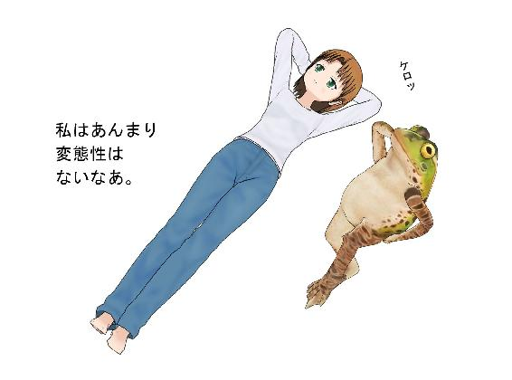
正常世界は異常世界を飲み込むとき、異常世界を支配しようとする。そしてここに、支配し、支配される概念が誕生する。
支配したりされたりという関係こそが、ＳＭの基本構造である。それもまた変態の一形態として知られている。いや、支配する、支配される関係は人間の根本的な行動様式なので、実は変態ではなくノーマルそのものなのだ。
なお、従来のＳＭはサド・マゾの略であり、Ｓは加虐的性癖で、Ｍは被虐的な性癖というのが一般的になっていた。
だがここにもグローバル化の波が押し寄せている。
現在はＢＤＳＭというのが国際標準となっている。
Ｂはボンデージ（Bondage）。拘束すること。
Ｄはディシプリン（Discipline）。調教すること。及び、ドミネイション（Domination）、支配するという意味も含まれている。
Ｓは従来の意味のほかに、サブミッション（submission）、服従という意味も持つ。
Ｍも従来の意味のほかに、マニュピレーション（Manipulation）、操作するという意味も持つ。
面倒な時代になったというなかれ。異常世界だったものが正常化されていくときには、必ずつきまとう分析・分類・定義といった洗礼を逃れることができないだけのことだ。
正常化とは、必ず定義されて、分類されて辞書に掲載されて引き出しに入れられていく。私たちもマイナンバー制度によって、より強固に正常化される。
ＢＤＳＭやＳＭが正常化されていったために、極端な形での支配、理不尽なまでの支配、さらにそれと性的な興奮を組み合わせたときに、変態度がいっきに増していくのであるが、それさえも正常世界での変態性になってしまった。
ただし、ＢＤＳＭは性的興奮と切り離すことはできないのだが、変態と性的興奮は切り離すことができる。冒険に乗り出すことは変態性のなせる技だが、それによって冒険者たちが性的興奮を得ているという確証はない。
正常世界は異常世界を支配して正常化することで、自分たちの領土を拡大できる。さらに、自分たちの中に異常を取り込んでしまう。
ノーマルはアブノーマルを飲み込んでしまわなければならない宿命を持つ。アブノーマルを最初に飲み込むのは変態的な行為である。
こうして、正常世界を維持・拡大するためには異常を支配するという変態行為が常套手段になってしまう。
支配する側からすれば、正常な行為としての変態行為であり、異常を正常にすることが支配の意味である。
そこに性的興奮があってもなくても、行動には大きな差はない。支配の本質は同じである。
支配される側からすれば、異常な者たちによって支配されてしまうことで自分たちがいっきに変態性を自覚させられることになる。
そう、これは「発見される側」と同じだ。
ここで意識は大きく変わる。
支配側は自分たちの変態性に無自覚で、支配される側は否応なしに変態性を自覚する。
このギャップこそ、ＳＭ、ＢＤＳＭの基本構造と通底している価値観であり、私たちが生きている社会の構造である。
正常世界の人間からは異常世界の自由は理解できない。もし、きっぱり世界が正常と異常に分断されていたとしたら、純粋変態性理論が意味を持つかもしれない。
正常だけの世界には純粋な正常な理論があり、純粋に変態な世界には変態理論があるわけだ。
だが、現実は違う。
正常世界と異常世界は、きっぱりと分かれているわけではない。だから割り切れない。このため正常と思っている人たちも、変態を意識しなければ正常を保てないことになってしまう。
もしみんなが正常に生きようとしたら、自分の中の変態性に向き合うしかないのだ。
この変態性は、人の立ち位置によって変化するため、相対性変態理論が成り立つ。
ゆで卵のように、白身と黄身がはっきりしているのならまだしも、たいがいの事象は境界が曖昧である。いわゆるグレーゾーンがある。「正常とは言いにくいけど変態呼ばわりはかわいそう」というジャンルである。
誰しもが「変態」と認める存在でさえも、実は曖昧なのである。
「そうでもないよね」と言われてしまったら、変態性はいっきに薄まってしまう。
たとえば犯罪でも、下駄箱から上履きだけを盗むとしよう。一足は「魔が差した」。二足は「変態っぽい」。三足を超えたら「変態」。じゃあ、三十足を超えたら？
要するになにが言いたいかといえば、一足でも三十足でも、その冒険に駆り立てる変態衝動は、誰にでもあるということなのだ。
異常世界は正常世界から見れば、アウトサイドであり、アウトサイダーたちは変態という判定をくだされるのだが、実はその変態性は正常世界にも存在していることなのである。
ただし正常世界の人がそれに気づくためには、異常世界に踏み込むしかない。
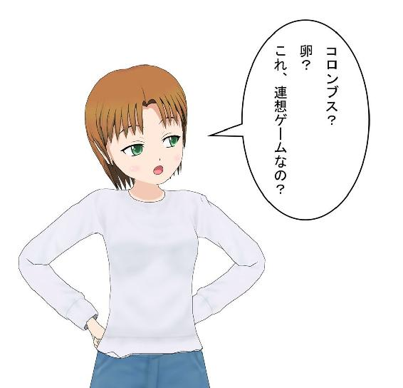
秋葉原に行くのは正常な行為。メイドカフェは正常な行為。ＪＫお散歩は正常な行為。そのＪＫを金で買って淫らな行為をしようというのは変態、というわけではない。まだ正常な行為だ。
なぜなら、そこには理屈がしっかり成り立っているからだ。少なくとも対価としての金銭の授受が成立している。こうしたサービスを金銭的な価値に換算する倫理性については、いまさらここで指摘することではない。人類が文明を築き、貨幣経済が定着してからずっと議論されてきたことである。
しかし一般的には「なんたらカフェでＪＫを買った」といった事態は、「変態行為」と表現される。エスカレーターで、ＪＫのスカートの中にスマホを突っ込んで撮影したら、「変態」である。いやらしい目で彼女を見ただけで「変態」と言われかねない。
こういう曖昧さ、適当さが、変態を正常化していくステップとなっている。
これが、ＪＫを金ではなく、フェロモンかなにかで誘い出し、ハメルンの笛吹きのように誘惑しメロメロにするとなると、かなり変態になっていく。おまけに、メロメロになったＪＫたちは、楽しそうに歌い、踊るのである。性的な行為はゼロ。条例にも違反しない。きわめて正常な行為のように見えて、常識を逸脱している。
もしこんなやつがＵＤＸの広場にいたら、それこそみんなで「この変態野郎！」と叫ぶべきだろう。ところが、このように未知の世界に触れたとき、人は正常世界の言葉を失ってしまうのである。
「なにやってんの？」
「なんか、宗教じゃね？」
「フラッシュモブかも」
まあ、こんなものだろう。そこにこそ変態があるのに......。
たとえば、ギターをかき鳴らしているストリートミュージシャンが人気になり、ＪＫたちが群がっていくとしたら、それを変態と呼ぶ人はいない。
音楽はＯＫなのである。ただし、このようにＪＫを釣っておいて、そのままホテルに直行して淫行に及ぶと条例に違反したりする。
ただし、そのホテル内で変態的な行為をしなければ変態とは呼ばれない。
変態的な行為とは、正常な性行為から逸脱した要素が入ることだ。
ところが先にも記したように、いまでは「正常な性行為」の定義がきわめて不安定化している。誰にとっての「正常」なのか。ＪＫ側としては「これが私にとっての正常な性行為」という基準があったとして、予めそれをお互いに摺り合わせることなく、一方的に「おれ様の正常な性行為」を押しつけると、変態行為と誹られてもしかたがない。
こうなると、いまの時代では、怖くて正常な性行為もできない。だから少子化なのだ、なんてふざけたことは言わないけども。
変態というものは、正常な世界でつくられたものには一切、縛られない。おそらく、「そんなことをしてなにが楽しいんだ」と正常世界の住人が言うようなことをすることを変態は含んでいる。
だからといって、人類は変態性を内包しているので、もともと持っている要素である。そしてＴＰＯを間違えなければ許される変態も含まれるのである。
しかし私たちは、しばしばＴＰＯを間違えるのである。
お金で性を売買するような行為は単なる資本主義にすぎず、資本主義は正常世界である。変態は爪の垢で性を提供したっていい。「そんなことでするのかよ！」と思ってもらってけっこうだ。
だって、変態だから。
いや、それでも目的が単純な性（セックス）の場合はまだ正常かもしれない。常識を超えていく自由とは、正常世界の住人には理解できない快楽にふけることである。
ところが、先人たちによって異常世界が拡張されていくにつれて、正常世界も膨張していく。
私たちの住む銀河系は毎秒六百キロ移動しているという説がある。膨張する宇宙だ。つまりこの世界は、もともと自分たちのいる場所から遠ざかる運命にある。
このように正常世界の中心にある純正常世界から、私たちは高速で遠ざかる。異常世界を取り込みながら、変態化していく。
この意味で結末がメチャクチャになっていく『宇宙家族ロビンソン』のように、または同様に誰も結末をよく知らない『タイムトンネル』のように、さらにはなにも未来を予見していないかのような未来を見せた『未来世紀ブラジル』のように。はたまた、コーエン兄弟の『ファーゴ』みたいにリアルな混沌の中での幸せのように。それとも『ＯＮＣＥ ダブリンの街角で』的ななにも起こらない事件のように。さらには『第９地区』みたいなエンディングが、『ＥＴ』みたいなエンディングをぶっ飛ばしてしまったように。
膨張と拡散によって、密度はどうしても低下していってしまうのである。
しばらくはそれに気づかず（フラッシュモブだぜ）、かなり時間が経ってから変態らしさに気づくことになる。
「あれ？ 変態じゃね？」
もっともそのときには、さらに新たな変態世界に突入してしまっているのであるが、まだ誰もそれに気づいていない......。
金銭を目当てに体を売るのは犯罪行為である。世の秩序のために必要な法律によって規定していて、別に変態だと断定しているわけではない。
その意味で法律は変態を取り締まっているのではない。変態防止法は存在していない（いまのところは）。変態に「いい変態」と「悪い変態」がいるわけではなく、「法律に違反している変態」と「法律の外にいる変態」がいるだけである。
これをもって、法律に不備があるといきまくのは間違っている。世の中は、法律ですべて規定するわけにはいかない。みんながトイレでなにをするかまで、規定することはできないのだ。また、してはいけないのである。もし世の中がそうなったら、膨張は停止し、急激に冷え込み、収縮が始まる。
収縮による犠牲者は計り知れない。膨張時には空間がいっぱいできるので、犠牲者は少ない。だが収縮はマズイ。大量の犠牲を伴う。そして最後にはブラックホールとなってしまう。
滲み出るフェロモンで女子を誘惑して踊り狂うのは、なんだか変態的だ。まして爪の垢と交換なんて異常すぎる。
そこまで言っておきながら、これは外観的には通常の恋愛と同じ手続きである。
好きな相手とセックスするのは、未成年者は法律で規定されているが、成人はＯＫだ。むしろ少子化対策として推奨されるべきだろう。子作りはＯＫ。セックスはＮＧという線引きはムリである。
そのきっかけとなる部分が、フェロモンだろうと、爪の垢だろうと、ダンスだろうと音楽だろうと、なんでもいいのだ。
もっとも変態的な交接は、お見合いだろう。相手の情報で結婚を判断する。結婚を決めてから欲情し、セックスする。うーん。悪くはないが、だからといってそれがすべてとも思えない。
もちろんお見合いは出会いに過ぎないのだから、そこがどれだけ変態的でもかまわないのである。合コンでもいい、飲み過ぎてトイレで吐いているところを助けてもらってもいい、ストーカーかと思ったらいい人だった的なものでもかまわない。
学校で出会う、バイト先で出会う、会社で出会う、取引先で出会う、知人の紹介で出会う、偶然出会う、ＳＮＳで出会う、援交で出会う、路上で出会う、痴漢されて出会う、犯罪行為で出会う、などなど、出会いの場はなんでもいいのだ。
ご存知のように秋葉原にはアダルトグッズを売る店がある。路面店である。ＪＲ駅からすぐである。とっても正常な世界の中にあり、そこではレジで買い物ができる。ＳＭ用品もある。鞭でも蝋燭でも浣腸でも。お好きなものをお好きなだけ。
こうなると、もはや鞭や蝋燭や浣腸は変態とはいえない。ほぼ正常な範疇に入る。コンビニに置いていないのが不思議なぐらいだ。
それらの商品には正札が貼られ、バーコードが設置され、在庫が管理され、売り上げが記録され、税金が申告され、スーパーやコンビニと基本的には同じ商業を営んでいるのだから。
こうなると、ＳＭを変態だとは決めつけにくいのである。単なる嗜好である。
そこに愛があるのなら、正常な営みである。同性愛もいまでは認められつつあるので、あらゆる組み合わせが、愛を前提にすると正常な行為となっていく。
「おまえは、お父さんとお母さんがＳＭプレイ中にできたんだよ」
「そうよ、お母さんはお父さんと出会い系で知り合って、何度かプレイして気心が知れて、結婚したの」
そうは言わないとは思うが、実際にそうだとしても不思議ではないのだ。
赤い糸で結ばれていたのではなく、丈夫な縄で結ばれていたということもあっていいのである。
ただ未成年や児童は保護されるべき存在なので、社会としてそこに手出しをしてはいけないルールとなっている。また意思表示ができない人間以外の生物も保護されるべき存在である。
この禁を破れば、それは法律違反である。
だからといって、法律違反が全員、変態ということではない。
変態も生殖のためにセックスをする。だって生物なんだもの。生きているのだから、する。いろいろな刺激や快楽がそこに付随する。
そうなのだ。おわかりのように、愛が最終目標となったら、それはもう変態ではない。正常な行動の範疇である。それを他人に見せる、野外でやるといった、ちょっとばかりヤバイ行為として楽しむとしても、それは正常世界の法律に触れる行為ということを除けば、きわめてまともな行為だと言えるだろう。
「あなたのお父さんは、お母さんの目の間に、下半身を丸出しで現れたのよ！」
とても話が早い。
「おまえの母親は、お父さんと最初のデートのときにパンティを履いていなかったのさ」
早い者勝ちである。そしてアメリカンジョークだ。
人間も生物である。生物の多くは野外で生殖行為をする。電気を消したりしない。パンダのように行為が世界中に動画で配信されるケースもある。だが社会的な人間としては、そのような生物的な快楽は、慎むべきなのである。
人間は社会性を重視するからだ。社会性の一部が法律となり、条例となり、倫理となる。
ここまで考えて、みなさんも混乱しつつ、お気づきのことと思う。
困ったことに、変態は逸脱し続けてもなお、正常範囲の拡大が追ってくるため、変態であり続けることはきわめて困難になってしまうのである。
たとえば愛し合う者同士が公園のベンチで抱擁するのはいいとしよう。だが、服をそのあたりに脱ぎ散らして生物的な行為に及べば法律違反になる。わかっているはずなのに、そういうことをするとすれば、異常である。
「愛し合ってるのに！」
正常世界には、このようにすぐ近くに異常世界が待ち受けている。
「もう、こうなったら死んでしまえ！」なんてことをしでかせば、これまた立派な正常行為である。人間は自分で死ぬ権利を持つ。これは法律で決めているのではなく正常世界の不文律である。どうしてかといえば、自殺した人をいくら罰しても、どうにもならないからだ。
変態を罰すると喜ぶかもしれない。こうなると罰を与えるだけ喜ばせることになりはしないか。この点は別の考察が必要だ。
話を戻そう。
変態だと思っていたら、正常だった。こんな事象が歴史的なスケールでは起きている。つまり正常化されてしまったら、それは変態ではない。
じゃあ、どうすれば変態でいられるのか。残念ながら決定打はない。大きな自己矛盾を抱えているからだ。
「変態は正常から逸脱した異常世界」を求めるのに、「未来の正常世界は過去の異常世界を飲み込む」ので、同じことをしていたら変態ではいられないのだ。
膨張する宇宙に合わせて秒速六百キロで走り続けないと、変態として留まることができない。
変態は変態からも逸脱しなくてはならない。「現在の変態」は「明日の正常」なので、「現在の変態からいち早く逸脱する」ことが変態であり続けることになる。変態は常に逸脱し続けなければならないことになってしまい、これはもはや変態行為をする暇もないほどなのだ。
変態は自由である。しかしその自由を守るためには、努力し続けなければならない。それを放棄した瞬間、正常という烙印を押されてしまうのだから。
さあ、あなたは変態として死にたいのか。それとも「やつも、結局はフツーの人間だったな」と言われて死にたいのか。
変態についての考察はまだ続く、かもしれない。
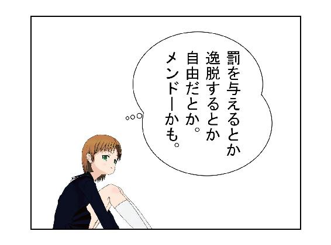
Ａ 妻としてはついていくのが正解です。変態は走り続けなければ変態を維持できません。いずれ走れなくなって、変態をあきらめるか、その前に死ぬと思います。いずれにせよ、妻としてはついていくのが得策です。できれば一緒に変態になってもいい。もちろん、ならなくてもけっこうです。
Ａ 変態は病気ではありませんから治すことはできません。
人類は変態性を内包しているので、それは腸内フローラの細菌のようにいっぱい体内にあるものの、通常は善玉変態菌のように振る舞うので、気にすることはありません。むしろ変態性はエネルギーの源泉でもあるので、生きている実感を味わいたいなら、大切にした方がいいでしょう。
Ａ 変態は必ずしも法律に違反しているわけではなく、社会性もある場合がほとんどです。変質者は社会性が欠如しているか、あるいは意図的に法律を破っているか、または法律に無知なのです。
このため変質者は逮捕されやすく、変態はどこにいるのか見つけにくい、といったことも起こります。
Ａ 今回は詳しく触れませんでしたが、変態性の露見は個体差が大きいので、あなたがどの程度の変態性を備えているのか、そしてそれをどのように発露しようとしているのかにもよります。
ただ「とんでもない変態」という予感は、内面の奥深くで虎視眈々と待機しているマグマのように、いずれ爆発したり、流れ出すと思いますので、それに備えておくことは必要なことです。
よくある方法は、「私は変態だ」と先に触れ回っておくこと。まだそれほど変態ではない時期には有効です。
次に社会性を脅かすほどの変態になってきたときは、もはやあきらめて、変態として生きるのです。その方がいい人生をまっとうできるのではないでしょうか。
自己の内面にある変態性を抑圧することで、どのような悪影響がもたらされるかはわかりませんが、きわめて危険なことだと予見することは可能です。
変態を小出しにする技術を覚えること。変態を良性のエネルギーとして発散する技術を覚えることも大事です。なお、趣味を持つことが有効という話もありますが、その趣味がまた、周囲に大いに迷惑という場合もありますので、趣味と社会性についてはよく考えておきたいものです。
なお最後に付け加えておきますが、変態はかなり無責任なので、変態に相談することは危険です。
著者はなにも、みなさんに変態になることをお勧めしているわけではありません。
また、人の生き方として、正常世界を否定して、異常世界に足を踏み込むようにと鼓舞しているのでもありません。
さらに社会性を損なう行動を取ろうとか、法律を無視しろと言っているのではありません。その逆です。
社会性のある変態こそが、未来を拓くのです。
正常で生きようが、異常で生きようが、人間はわずか百年ほどの時間をこの世で享受できる可能性を得ているだけです。
その限られた時間の中で、自分らしく生きる、または自分にしかできないことをまっとうする、そういう人生を実現したいのなら、内に秘めた変態性に目を向けて、それをどうパッションとして生かすか、考えてみてはいかがでしょうか。
本書が多くの人の勇気と力と諦念そして思い切りに役立つことを願っております。
あんぷらぐど
ＳＭ雑誌に「仲ゆうじ」名でＳＭ小説を執筆して作家活動をスタート。その後、作家活動は休止し、編集の仕事に携わる。二〇一一年より独自レーベル「荒縄工房」を立ち上げる。オリジナル作品をブログにほぼ毎日書き続け、それをＰＤＦで販売。さらにアマゾン・キンドルストアで電子書籍化している。
ＳＭに代表される支配する、支配される愛の表現を追求すると同時に、昭和のＳＭ文化を大切にしながらも、作品は従来のＳＭ小説にとらわれないエンターテインメント世界を目指している。東京在住。
お読みいただき、ありがとうございました。
二〇一五年八月刊行 第一版
著作権 あんぷらぐど（荒縄工房）
ブログ「今日も上機嫌ってわけないだろ」